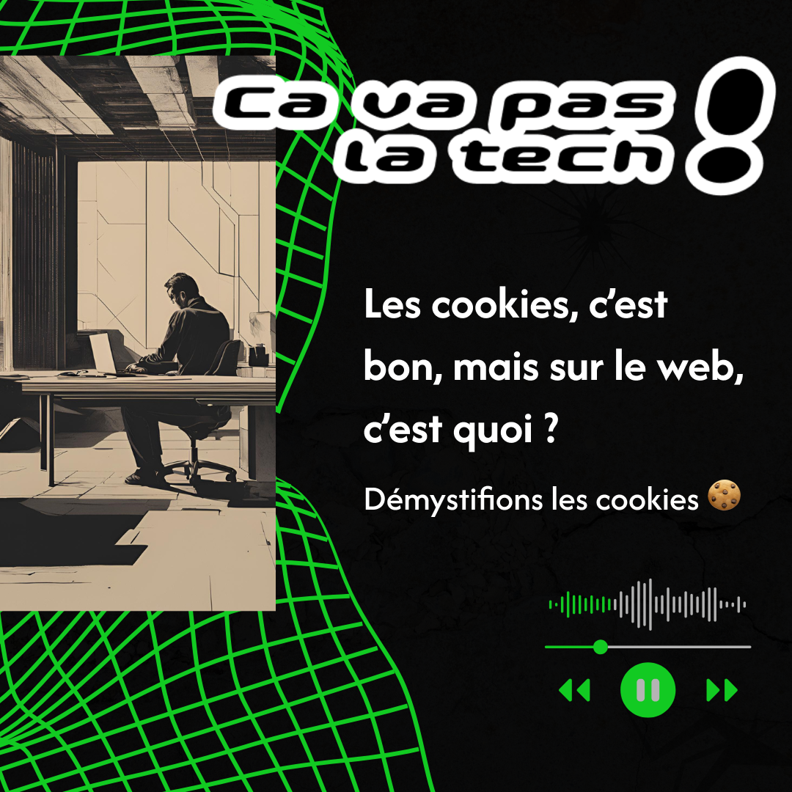
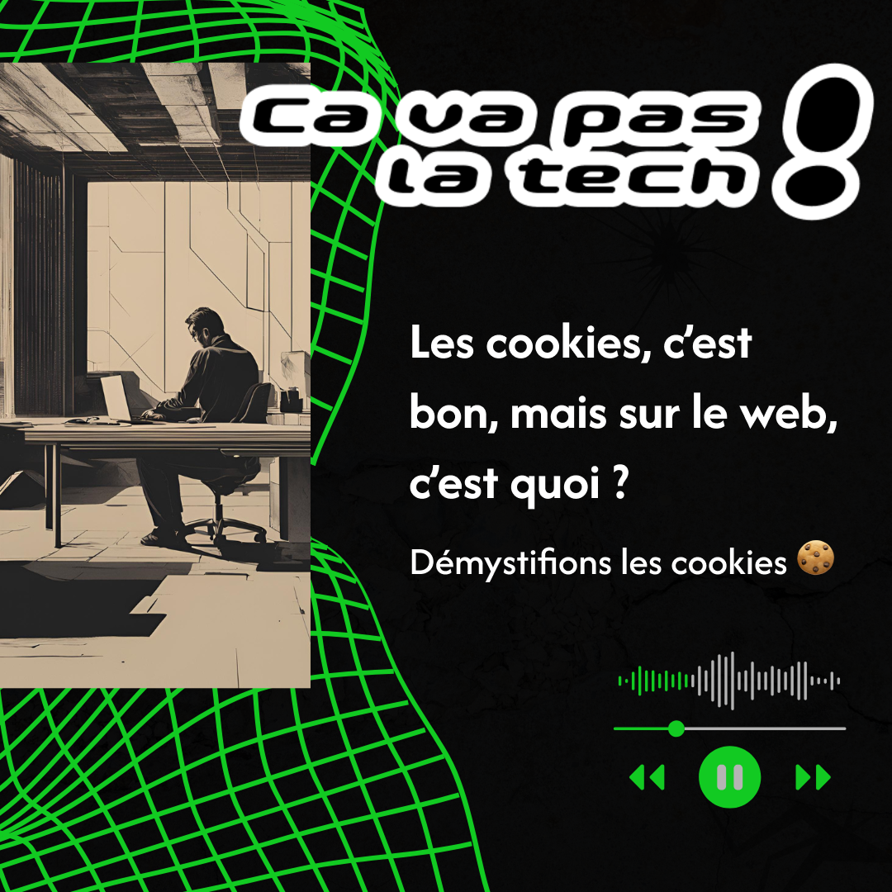

Ça va pas la tech!
“Ça va pas la tech!” est un podcast sur la programmation créer par Arnaud, passionné souhaitant partager son métier et le faire découvrir au plus grand nombre.
Bien qu’entouré d’outils numérique, il a conscience que la programmation reste encore obscure pour ses proches. À travers ce podcast, il explore les enjeux technologiques contemporains et les sujet tech’ de façon vulgarisé.
Pour ce projet, j’ai voulu créer un univers visuel fort, à la fois old school et moderne, qui reflète la thématique du podcast. mon objectif était de traduire fidèlement la personnalité du client et l’ADN du projet.
J’ai donc respecté sa demande de créer une esthétique brutaliste, franche et directe.
Le design s’est construit autour de cette approche : sans superflu, avec des blocs nets, des typographies massives et une hiérarchie visuelle assumée.
Logo
Le logo du projet “Ça va pas la tech!” incarne l'identité forte et engagée d’un média critique et alternatif. J’ai voulu créer une signature visuelle à la fois percutante et accessible, en cohérence avec l’univers brutaliste du projet.
Le choix typographique repose sur des caractères massifs et francs, rappelant l’univers hacker, DIY et rétro-futuriste.
La construction du logo mêle une géométrie simple et un contraste fort pour garantir lisibilité et impact, même en petite taille ou en environnement sombre. Le noir assure une neutralité visuelle et le vert plus impactant donne presque un côté mystique tout en renforçant la dimension éditoriale du projet.
Web design
J’ai commencé par analyser les valeurs du projet et son ton éditorial : passionné, informatif, mais toujours clair. J’ai ensuite conçu une identité visuelle décalée, mêlant typographies franches, palette vive et éléments graphiques inspirés du glitch ou de l'internet vintage. Le site a été pensé pour mettre en valeur le podcast. J’ai travaillé une circulation fluide et intuitive, afin que les utilisateurs puissent rapidement retrouver le dernier épisode publié ou naviguer vers des sujets qui les intéressent, grâce à un système de tags clairs et accessibles. L’objectif était de rendre l’exploration des contenus simple, directe et agréable.
Réseaux sociaux
La présence de Ça va pas la tech! sur les réseaux sociaux prolonge sa mission : rendre les enjeux du numérique accessibles à tous.
Le design graphique des posts reprend les codes visuels du projet
- Typographie brute, noir & blanc contrasté, mise en page directe
- Capter l’attention et faire passer des messages clairs, sans détour.
 
